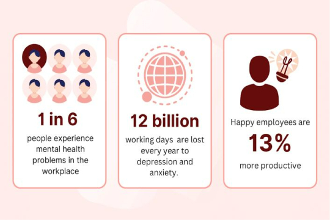
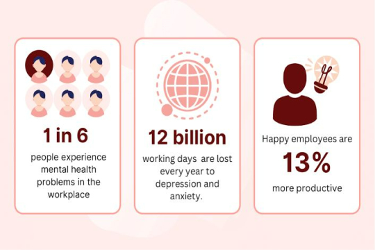
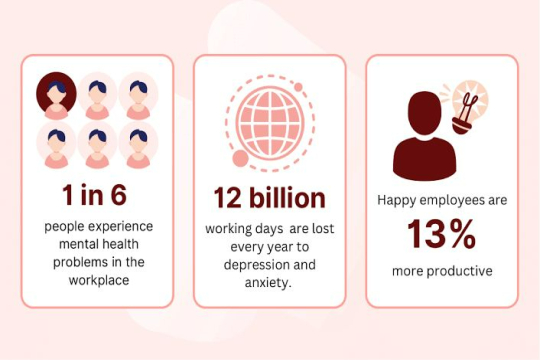

Click to use chatbot
XE-5
close-
smart_toy
Hi👋
How can I help you today?
send
Do You Know?

 

Click to use chatbot
Hi👋
How can I help you today?


SELF-CARE
Create a daily routine that includes consistent wake-up times, meals, and bedtime. A structured routine can provide a sense of stability.
Practice deep breathing exercises to help manage anxiety and stress. Simple techniques like diaphragmatic breathing can be effective.
Keep a journal to express thoughts and feelings. Writing can be a therapeutic way to process emotions.
Maintain a balanced diet and stay hydrated. Nutrient-rich foods can positively impact mood and energy levels.
Incorporate regular physical activity into the routine. Exercise releases endorphins, which can improve mood.
Spend time outdoors, even if it's just for a short walk. Nature has a calming effect on the mind.
Take breaks from social media to reduce information overload and comparisons. Focus on real-life connections.

Prioritize good sleep hygiene. Create a comfortable sleep environment and establish a consistent sleep schedule.
Learn to set boundaries to protect your energy. It's okay to say no and prioritize your well-being.

Take a warm bath to relax muscles and soothe the mind. Consider adding calming scents like lavender.
Practice mindful eating by savoring each bite. Pay attention to the tastes, textures, and sensations.
Maintain social connections with friends and family. Share your feelings and seek support when needed.
FAQs
Mental health refers to emotional, psychological, and social well-being. It encompasses our emotional resilience, the ability to cope with stress, and our relationships with others.Learn More
Common mental health conditions include anxiety disorders, depression, bipolar disorder, schizophrenia, and eating disorders, among others. Learn More
Signs may include changes in mood, behavior, sleep patterns, social withdrawal, and physical symptoms. Learn More
Strategies include seeking social support, managing stress, regular exercise, healthy eating, and practicing mindfulness.Learn More
Yes, mental health problems can affect people of all ages, including children and teenagers. Learn More
access our XE-5 chatbot in the Main page!
Anxiety is a natural response to stress, but it becomes a disorder when it's excessive and persistent.Learn More
Common anxiety disorders include generalized anxiety disorder (GAD), social anxiety disorder, and panic disorder.Learn More
Self-help techniques like deep breathing, mindfulness, and exercise can help.Learn More
If anxiety significantly affects your daily life or causes distress, consult a mental health professional.Learn More
Yes, medications like SSRIs or benzodiazepines can be prescribed, but they should be used under professional guidance.Learn More
access our XE-5 chatbot in the Main page!
Depression is a mood disorder characterized by persistent sadness and a loss of interest or pleasure in activities.Learn More
Symptoms include low energy, changes in sleep and appetite, and feelings of hopelessness.Learn More
Yes, depression is treatable with therapy, medication, or a combination of both.Learn More
Yes, regular exercise, a balanced diet, and sufficient sleep can complement treatment. Learn More
Encourage them to seek professional help, provide support, and be a good listener.Learn More
access our XE-5 chatbot in the Main page!
Bipolar disorder is a mood disorder characterized by extreme mood swings, including manic (elevated mood) and depressive (low mood) episodes.Learn More
Practice deep breathing exercises to help manage anxiety and stress. Simple techniques like diaphragmatic breathing can be effective.Learn More
With proper treatment and support, many individuals with bipolar disorder can lead fulfilling lives.Learn More
There is a genetic component to bipolar disorder, but it's influenced by various factors.Learn More
Triggers can vary and may include stress, sleep disturbances, or substance use.Learn More
access our XE-5 chatbot in the Main page!
Schizophrenia is a severe mental disorder characterized by distorted thinking, hallucinations, and delusionsLearn More
Symptoms may include hallucinations, delusions, disorganized thinking, and a lack of emotional expression.Learn More
Diagnosis involves a comprehensive psychiatric evaluation and assessment of symptoms. Learn More
Yes, early diagnosis and intervention can improve outcomes. Learn More
Schizophrenia prevention strategies are limited, but early intervention can help manage symptoms. Learn More
access our XE-5 chatbot in the Main page!
Eating disorders are serious mental health conditions characterized by unhealthy eating habits and distorted body image. Learn More
Common eating disorders include anorexia nervosa, bulimia nervosa, and binge-eating disorder. Each has its own set of symptoms and characteristics.Learn More
Symptoms can include extreme dieting, binge eating, purging, preoccupation with weight, and changes in appearance.Learn More
Diagnosis involves a comprehensive assessment by a healthcare professional, which may include physical exams, psychological evaluations, and lab tests. Learn More
Eating disorders can lead to serious health problems affecting the heart, bones, digestive system, and more.Learn More
access our XE-5 chatbot in the Main page!

CONTACT